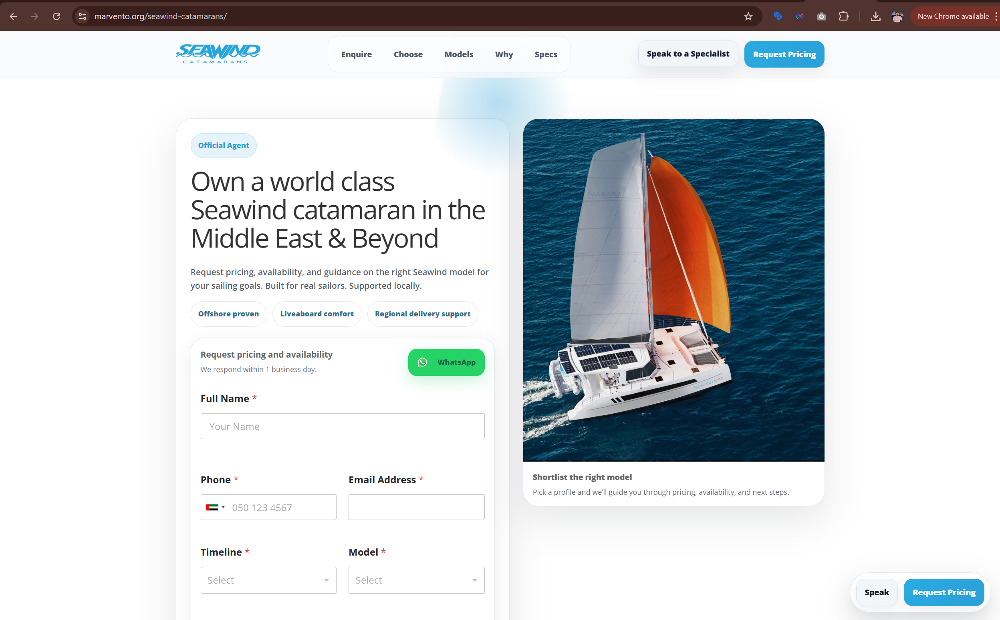
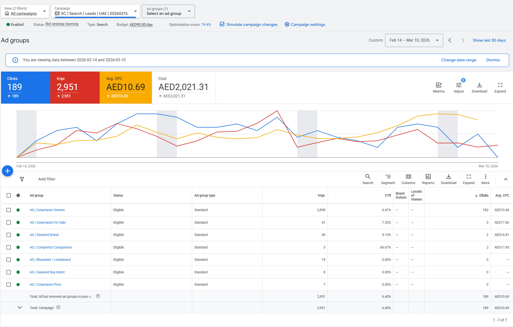

Marvento
Building a digital acquisition system for premium sailing brands in the Middle East.
Marvento is an official Middle East agent for Seawind Catamarans and Corsair Trimarans. I worked across Google Search, YouTube, landing page optimisation, and intent-led messaging to attract serious sailing audiences, improve message match, and create a stronger path from click to inquiry.

Premium marine and sailing
Worked in a specialist category where buyers research heavily before making inquiries.
Seawind Catamarans and Corsair Trimarans
Built acquisition strategy for two distinct multihull brands with different positioning angles.
UAE, Saudi Arabia, Qatar, Kuwait, Oman, Bahrain
Campaigns were structured for sailing audiences across key Middle East markets.
Qualified inquiries and stronger positioning
The focus was relevance, education, and serious buyer intent rather than broad low-quality traffic.
Niche sailing audiences needed a more intentional acquisition strategy
Premium sailing boats sit in a specialist market. Buyers compare brands, watch a lot of content, and often begin with broad catamaran searches before narrowing down what they actually want.
The challenge
Marvento needed a digital setup that could capture multihull demand, introduce Corsair trimarans to less familiar audiences, and position Seawind more effectively during active research. The funnel had to balance education, premium presentation, and lead quality.
Core gaps to solve
- Generic traffic would not be useful in a niche marine category
- Boat buyers have longer research cycles than standard lead-gen audiences
- Corsair needed stronger educational positioning for unfamiliar audiences
- The old landing page was too broad and not tightly matched to Seawind search intent
- Campaign structure needed to reflect research, comparison, and buy-intent stages
Strategy, campaign architecture, landing page direction, and creative input
I handled the digital acquisition strategy end to end, including Google Ads structure, YouTube setup, keyword planning, audience definition, landing page messaging, and video ad direction.
Strategy and campaign planning
- Designed the full Google Ads acquisition structure
- Segmented campaigns by buyer intent and research stage
- Built keyword groups around research, comparison, and purchase intent
- Created a separate awareness path for Corsair through YouTube
Execution and optimisation
- Shaped landing page messaging and structure
- Moved from a broad page to a more focused Seawind-specific landing page
- Developed the video ad narrative for Corsair trimarans
- Refined targeting through audience, keyword, and placement optimisation
A funnel built around how sailors actually research boats
The campaign architecture mapped to the real buying journey of multihull audiences, from early category research to lower-funnel purchase intent.
Research-stage targeting
Captured sailors beginning their journey with broad catamaran and multihull searches.
- AG | Catamaran Generic
- Keywords like cruising catamaran, sailing catamaran, luxury catamaran
- Focused on early demand capture
Lifestyle and exploration intent
Reached sailing audiences through the themes that often define serious multihull research.
- AG | Bluewater / Liveaboard
- Keywords like bluewater sailing, liveaboard sailing, offshore sailing boat
- Positioned Seawind around long-distance and lifestyle value
Competitor comparison
Inserted Marvento’s brands into active comparison journeys where sailors were already evaluating alternatives.
- AG | Competitor Comparison
- Queries around Lagoon catamaran and Leopard catamaran
- Introduced Seawind as an alternative during brand evaluation
Purchase-intent capture
Built dedicated groups for buyers who were closer to inquiry and purchase consideration.
- AG | Catamaran For Sale
- AG | Catamaran Price
- Queries like catamaran for sale and sailing yacht price
Brand capture
Protected and leveraged existing interest through dedicated Seawind-focused ad groups.
- AG | Seawind Brand
- AG | Seawind Buy Intent
- Captured users already searching with brand familiarity
Corsair awareness and next-step search
YouTube introduced Corsair trimarans to relevant sailing audiences, while search campaigns are being developed to capture trimaran demand more directly.
- Skippable in-stream campaign setup
- Custom audiences from sailing search signals
- Sailing and multihull YouTube placements
Replacing a broad landing page with a more focused Seawind destination
One of the most important improvements in this project was tightening the page experience. The original landing page was too general, which weakened message match and made it harder to speak directly to Seawind search intent.
What changed
We shifted from the broader page at marvento.org to a more focused Seawind-specific landing page at marvento.org/seawind-catamarans/. That created a more relevant destination for users arriving from Seawind and catamaran-related search campaigns.
Why it mattered
- Improved message match between ads and landing page
- Created clearer product-specific positioning
- Made the value proposition more relevant to sailing searchers
- Strengthened the path from click to inquiry
Video messaging built for performance-oriented sailors
For Corsair, the challenge was not only reach. It was category education. The creative needed to explain what makes a trimaran distinct and why it appeals to performance-minded sailors.
Corsair video narrative
I helped shape the narrative flow of the video ad around speed, control, freedom, low drag, trailable design, instant acceleration, and beachable hulls. The message closed by positioning Corsair as now available in the Middle East, giving the creative direct regional relevance.
Refining targeting, segmentation, and quality signals
The setup evolved through refinement rather than a one-time build. That included keyword cleanup, tighter audience inputs, expanded placements, and clearer intent segmentation.
Keyword refinement
Removed overly broad terms, added negative keywords, and focused targeting around sailing-specific intent.
Ad group expansion
Added groups such as Catamaran For Sale and Catamaran Price to capture lower-funnel interest more directly.
YouTube targeting improvements
Expanded placements and custom audience inputs to include sailing channels, boat reviews, multihull content, and sailing-related search behaviour.
Early campaign data showed strong engagement for a highly niche sailing audience
Because yacht purchases involve long decision cycles, the earliest benchmark was qualified engagement rather than immediate conversion volume. Even so, the initial data showed strong relevance for a specialist market.
2,951
Early-stage exposure across targeted sailing audiences.
189
Traffic generated during the initial launch phase.
~6.4%
Strong engagement for a premium, specialist marine category.
AED 10.69
Efficient early traffic acquisition given the niche intent and premium audience profile.
Examples from the workstream
Click any image to view it larger.

Focused Seawind landing page
A more targeted landing experience created to replace the broader original page and better align with search campaign intent.
{kind=link}

Intent-based campaign structure
Search and YouTube setup structured around research, comparison, awareness, and purchase-stage sailing audiences.
What this project says about how I work
- I can adapt performance marketing to premium, niche, high-consideration categories.
- I build acquisition systems around real buyer behaviour, not generic campaign templates.
- I improve conversion paths by working on both traffic strategy and landing page relevance.
- I balance positioning, education, and lead quality in markets where trust matters.
Want to see another project?
Explore another case study covering healthcare consulting, real estate performance marketing, or platform-focused web development.